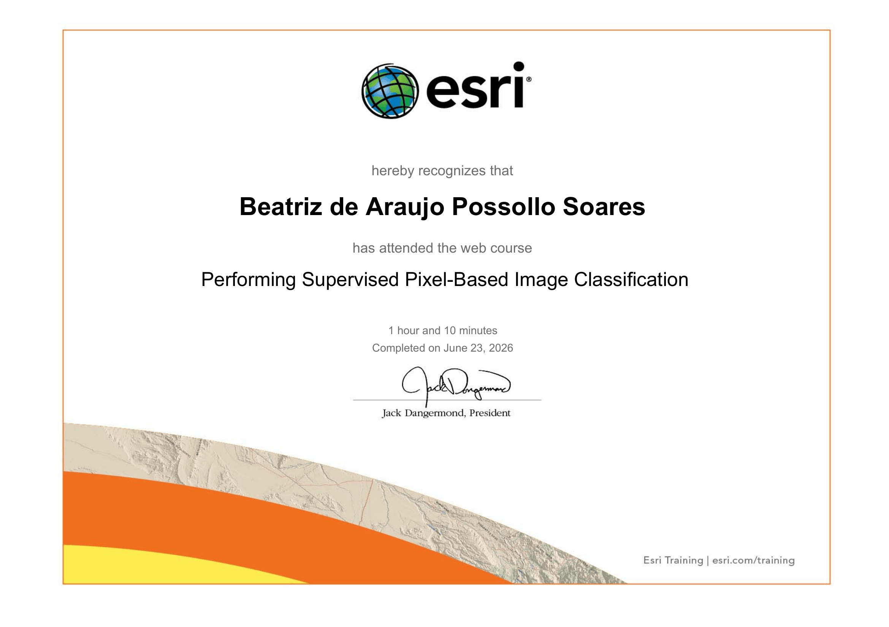
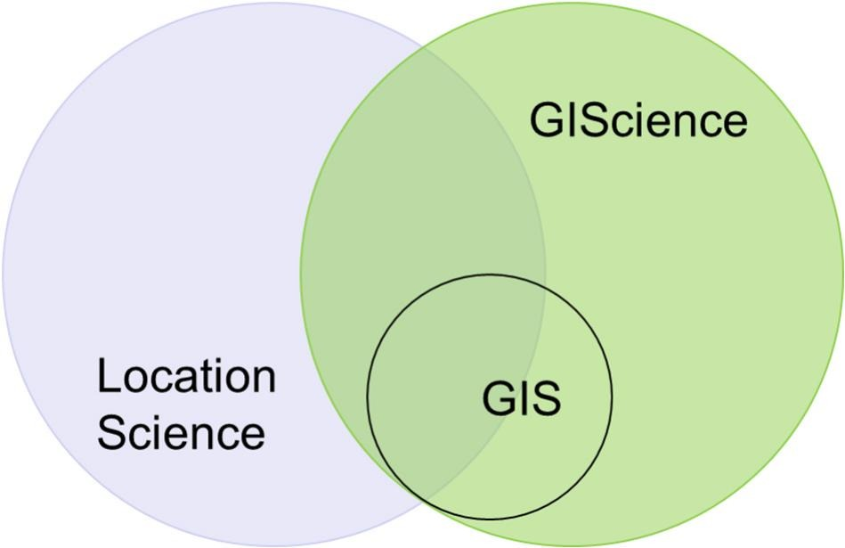

Beatriz de Araujo Possollo Soares
Geographical Information Systems (GIS)
Welcome to Beatriz de Araujo Possollo Soares collection of labs and explorations in the UCU science summer lab course Geographical Information Systems (GIS) (UCSCIEARL5). On this website, you will be able to find 5 different explorations: the chloropleth map, the digital elevation model map, the vegetation indices exploration, the image classification results, and a multicriteria analysis. Enjoy!
GIS vs GIScience
An important distinction that must be made when studying Geographic Information Systems (GIS) is being able to distinguish it from GIScience (Geographic Information Science). The main difference between these two is that whilst GIS is a tool that is utilised to collect and analyse spatial and geographic data visually, GIScience is the study of geographic information, spatial data and thinking. GIScience focuses primarily on scientific developments in the field of geographic information, but GIS itself aims more towards applying data to the real-world to identify patterns, trends, or simply visualise existing data. A simple way to differentiate between GIS and GIScience is to imagine that GIScience is the theory and science behind geographic information, whilst GIS is the technology and practice of applying geographic information.
Below I have attached a beautiful Venn Diagram developed by Alan Murray (Murray, 2025) depicting the overlap between GIS and GIScience, in comparison to the academic field of Location Science.


Murray, A. T. (2025). Beyond location modeling and GIS: Integration and bridging. Computers & Operations Research, 180, 107073. https://doi.org/10.1016/j.cor.2025.107073